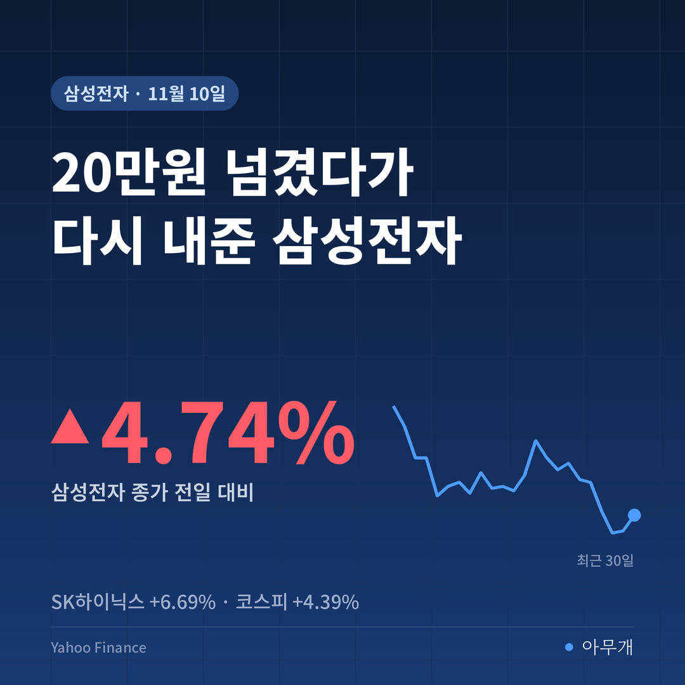
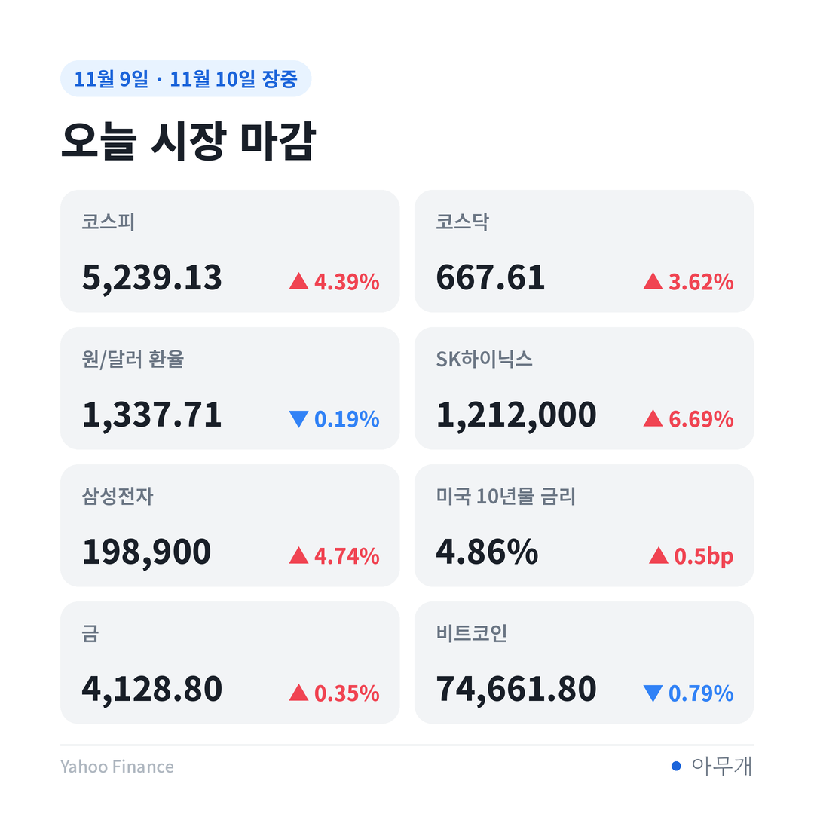
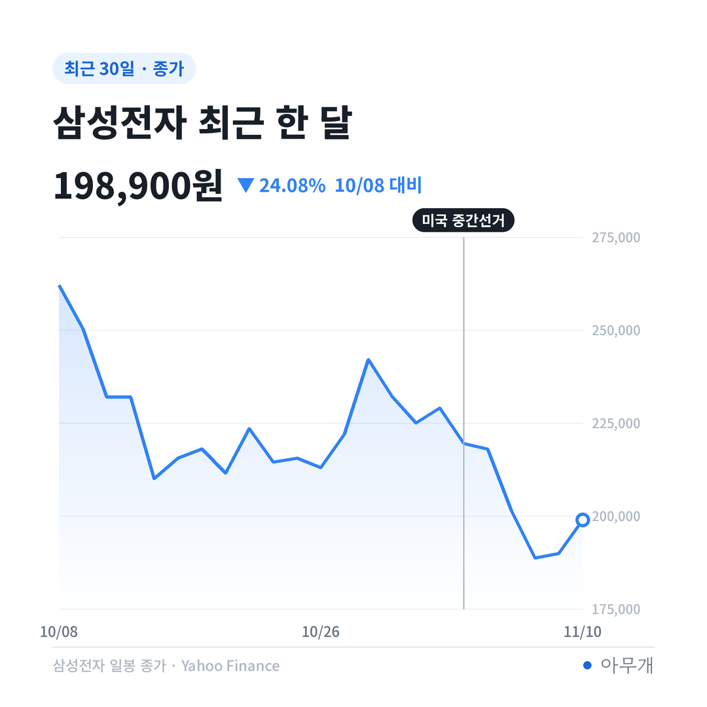
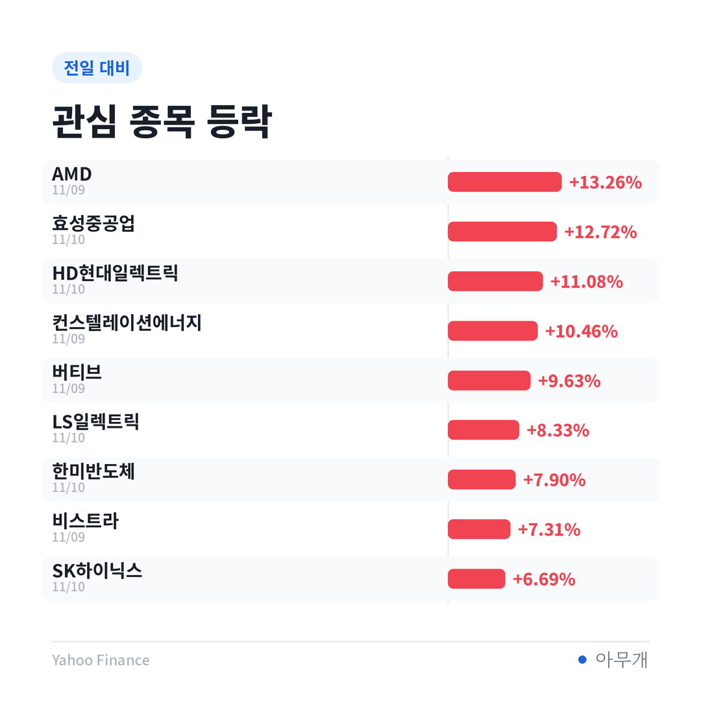

📷 사진 1 자리
사이드카로 시작해 5,239로 끝난 하루
| 시각(10일) | 내용 |
|---|---|
| 9시 | 코스피 4.55% 오른 5,247.22로 출발[1] |
| 9시 6분·10분 | 코스피에 이어 코스닥에도 매수 사이드카 발동[1][2] |
| 9시 15분 | 코스피 +5.48%, 삼성전자 20만1000원, SK하이닉스 123만9000원[1] |
| 9시 24분 | 삼성전자 20만750원, SK하이닉스 123만1000원[3] |
| 15시 30분 | 코스피 5,239.13(+4.39%) 마감[4] |
출발 신호는 전날 밤 미국이었어요. 필라델피아 반도체지수가 6.85% 뛰었고, 국내 시장은 문을 열자마자 프로그램 매수를 잠깐 멈추는 매수 사이드카가 걸릴 만큼 올랐어요. 아침에는 '20만전자 회복' 소식이 줄을 이었어요[5].
장 초반 숫자와 마감 숫자는 다른 이야기
| 구분 | 확인된 내용 |
|---|---|
| ✅ 사실 | 코스피·코스닥 장 초반 매수 사이드카[1][2] |
| ✅ 사실 | 삼성전자 종가 198,900원, SK하이닉스 1,212,000원 |
| ✅ 사실 | 원/달러 환율 9.6원 내린 1,337.5원(15시 30분 기준가)[6] |
| 🗣️ 보도 | 한 증권사 고수익 투자자들이 오후에 삼성전자·SK하이닉스를 팔고 삼성전기 등을 산 것으로 집계[7] |
| 🗣️ 보도 | 투자 고수들이 반도체 3배 레버리지와 인버스 ETF를 동시에 사들임[8] |
| ❓ 확인 안 됨 | 오후에 상승폭이 줄어든 정확한 이유 |
오후에 왜 밀렸는지 딱 잘라 설명한 자료는 없어요. 다만 함께 볼 정황은 있어요. 오른 반도체 대형주를 판 투자자가 있었다는 집계와, 같은 반도체 ETF를 오르는 쪽과 내리는 쪽으로 동시에 산 투자자가 있었다는 보도예요[7][8]. 반등을 반기면서도 방향은 확신하지 못한 하루로 읽혀요.
시가보다 낮게 끝난 4% 반등
| 지표 | 10일 종가 | 전일 대비 | 1달 |
|---|---|---|---|
| 코스피 | 5,239.13 | +4.39% | -20.93% |
| 코스닥 | 667.61 | +3.62% | -25.18% |
| SK하이닉스 | 1,212,000원 | +6.69% | -27.90% |
| 삼성전자 | 198,900원 | +4.74% | -24.08% |
| 한미반도체 | 173,400원 | +7.90% | -35.06% |
숫자만 보면 큰 반등이에요. 그런데 코스피가 5,247.22로 출발해 5,239.13에 끝났다는 건, 시가에 산 사람은 종가 기준으로 오히려 손해였다는 뜻이에요[1]. 하루 상승분은 전날 종가(5,018.85)와 비교한 숫자라서, 아침 갭 상승이 거의 전부였던 셈이에요.
📷 사진 2 자리
선거 전과 비교하면 거리가 더 잘 보여요. 11월 2일 코스피 종가는 5,859.08이었어요. 그 뒤 3일에 한 번 크게 빠졌고, 5일과 6일·9일에도 연달아 내렸어요. 오늘 하루로 되찾은 건 그중 일부예요.
원/달러 환율도 같은 쪽을 가리켰어요. 15시 30분 기준가는 1,337.5원으로 전날보다 9.6원 내렸어요[6]. 원화가 강해진 건 위험자산을 피하던 분위기가 하루쯤은 누그러졌다는 신호로 볼 수 있어요. 수출 대형주 입장에서는 환율 효과가 조금 줄어드는 날이기도 해요.
삼성전자·SK하이닉스, 오전에서 오후 사이
| 종목 | 장 초반(9시 15분) | 종가 | 선거 전(11월 2일) 종가 |
|---|---|---|---|
| 삼성전자 | 20만1000원 (+5.95%)[1] | 198,900원 (+4.74%) | 229,000원 |
| SK하이닉스 | 123만9000원 (+9.07%)[1] | 1,212,000원 (+6.69%) | 1,472,000원 |
삼성전자는 9시대에 20만원 위에 있다가 2천원 남짓 아래에서 장을 마쳤어요[1][3]. 상승률로 보면 오전 5.95%에서 4.74%로 줄었어요[1]. SK하이닉스는 줄어든 폭이 더 커서, 9.07%까지 갔던 상승률이 6.69%로 끝났어요[1].
📷 사진 3 자리
그래서 제목의 질문에 대한 답은 아직 절반이에요. 확인되는 건 출발 자체가 높았다는 점, 그리고 오후에 오른 대형주를 판 투자자가 있었다는 한 증권사 집계 정도예요[7]. 결과를 모르는 미국 물가 발표를 몇 시간 앞두고 상승분 일부를 챙긴 흐름으로 볼 수는 있지만, 이를 뒷받침할 장 마감 수급 자료는 아직 나오지 않았어요.
두 종목 모두 1달 기준으로는 코스피보다 많이 빠져 있어요. 삼성전자 -24.08%, SK하이닉스 -27.90%로, 같은 기간 코스피(-20.93%)보다 낙폭이 커요. 반도체가 지수를 끌어내렸고, 오늘은 반도체가 지수를 끌어올린 구조예요.
한미반도체는 하루 7.90% 올라 셋 중 가장 많이 올랐어요. 다만 1달 기준 -35.06%로 빠진 폭도 가장 커요.
📷 사진 4 자리
엔비디아 문제는 끝난 걸까
국내 반도체주의 반등은 엔비디아가 빠진 날 나온 거예요. 9일(현지시간) 엔비디아는 4.27% 내렸지만 AMD는 13.26% 올랐어요. 시장이 엔비디아 경영진 문제와 반도체 수요를 따로 본 셈이에요.
국내 상장 ETF에서도 같은 흐름이 보였어요. 이름에 엔비디아가 들어간 ETF 7개는 9일 모두 내렸다가 10일에는 오름세로 돌아섰어요[9]. 이 ETF들은 엔비디아 말고도 다른 반도체주나 채권을 담고 있어서 엔비디아 한 종목보다 덜 흔들렸다는 설명이에요.
그렇다고 변수가 사라진 건 아니에요. 엔비디아 이사회 조사는 진행 중이고, 젠슨 황 뒤를 이을 뚜렷한 후계자가 없다는 점이 위험으로 꼽혀요[10]. 증권가에서는 사생활 문제보다 AI 관련 국가 안보 이슈, 대중국 수출 통제 강화로 번질 수 있다는 점을 더 경계해요[9].
내일 장을 가를 세 갈래
| 시나리오 | 무엇을 보면 되나 | 예상되는 영향 |
|---|---|---|
| 반등 이어짐 | 10일 밤 미국 10월 물가(CPI)가 예상 범위, 미국 반도체지수 추가 상승 | 삼성전자 20만원 재도전, 반도체 대형주 중심 회복 |
| 갭 상승 뒤 반납 반복 | 미국 지표 혼조, 장 초반 상승 뒤 오후 약세 패턴 | 하루 등락폭은 크지만 지수는 제자리. 선거 전 수준 회복은 늦어짐 |
| 엔비디아 문제가 커짐 | 이사회 조사 결과, 미 의회·당국의 수출 통제 언급 | 회사 하나의 문제가 업종 문제로 번질 수 있음. 엔비디아 공급망인 국내 메모리주도 영향권 |
오늘 숫자에서 가장 눈에 띈 건 상승률보다 시가와 종가의 관계였어요. 지수가 4% 넘게 올랐는데 시가보다 낮게 끝났다면, 반등을 믿고 따라 산 돈은 많지 않았다는 뜻으로 보여요. 최근 며칠 동안 빠진 만큼을 되찾으려면 아침 갭이 아니라 장중에 사는 힘이 붙는지를 봐야 한다고 생각해요.
✍️ 직접 보거나 들은 경험이 있으면 위 문단에 한두 줄 덧붙이세요 (이 안내 줄은 지우기)
반대로 볼 수도 있어요. 사이드카가 걸릴 만큼 시가가 높게 출발했으니, 장중에 조금 밀린 건 자연스러운 숨 고르기라는 시각이에요. 오늘 밤 미국 물가 발표와 코어위브 실적을 앞두고 있어 일부가 차익을 챙겼을 뿐, 반등 자체가 약하다는 신호는 아니라는 해석도 가능해요[1].
이번 주에 볼 것
참고한 기사
이 글은 정보 제공 목적이며 투자 권유가 아닙니다. 투자 판단과 책임은 본인에게 있습니다.
시장 수치: Yahoo Finance 기준(국내는 11월 10일 종가, 미국은 11월 9일 종가). 1달은 30일 전 종가 대비. 장 초반 숫자와 환율은 각 기사 기준



